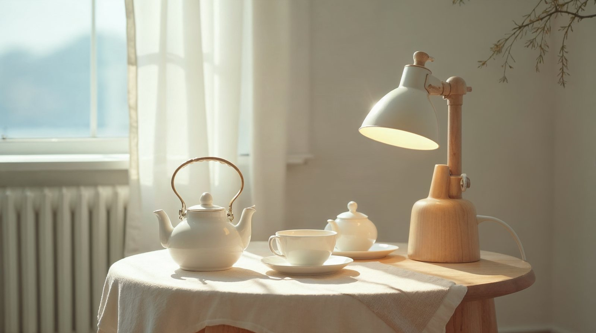
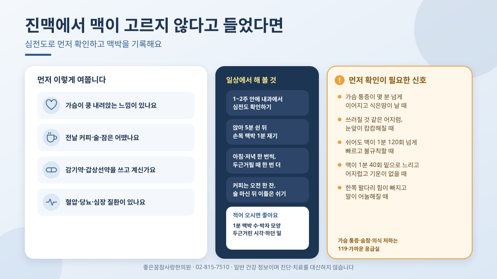

이종호 한의사 감수좋은꿈참사랑한의원 대표원장 (한의사 면허번호 19769)발행 2026-11-27 · 수정 2026-11-27
이 글의 차례
진맥을 받다가 "맥이 조금 고르지 않네요", "한 번씩 쉬어 가는 것 같아요"라는 말을 들으면 덜컥 겁이 나시죠. 심장에 무슨 일이 있는 건 아닐까, 집에 가는 내내 손목을 만져 보게 되고요. 그 마음 충분히 이해해요.
진맥은 손목 엄지 쪽에서 뛰는 맥 위에 세 손가락을 얹고, 맥이 뛰는 빠르기와 깊이, 힘, 모양과 함께 박자가 고르게 이어지는지를 살피는 진찰이에요. 먼저 안심부터 드릴게요. 커피나 술, 잠 부족, 긴장 뒤에 박동이 한 번씩 일찍 뛰었다가 쉬는 조기 박동이 섞이는 경우가 흔하고, 이런 경우는 대개 큰 문제 없이 지나가는 일이 많거든요.
그러니까 사실은 두 가지를 나눠서 보셔야 해요. '박자가 흔들리는 걸 느끼는 것'과 '그 흔들림에 이름을 붙이는 것'은 다른 얘기예요. 같은 느낌이 심방세동처럼 뇌졸중 위험과 이어지는 리듬 변화에서 올 수도 있는데, 둘을 손끝만으로 가려낼 수는 없어요. 그건 심전도가 하는 일이거든요.
그래서 진맥에서 이런 변화를 처음 들으셨다면 1~2주 안에 가까운 내과나 심장내과에서 심전도로 확인해 보시길 권해요. 그사이 집에서 손목 맥박을 하루 두 번 1분씩 재어 기록해 두시면 병원과 한의원 진료 모두에 도움이 됩니다.
왜 맥이 고르지 않게 느껴질까요
- 심장은 위쪽에 있는 작은 박동 조율 부위에서 일정한 간격으로 전기 신호를 만들어 뜁니다. 다른 자리에서 신호가 먼저 생기면 한 박자가 일찍 뛰고, 그다음 잠깐 쉬었다가 다시 뛰어 손목에서는 맥이 건너뛴 것처럼 느껴집니다.
- 일찍 뛴 박동은 피를 충분히 내보내지 못해 손목까지 약하게 전해지거나 아예 느껴지지 않기도 합니다. 그래서 가슴에서는 뛰었는데 손목에서는 한 박자가 빈 것처럼 느껴질 수 있습니다.
- 커피, 에너지 음료, 진한 녹차의 카페인과 담배의 니코틴은 박동을 예민하게 만들 수 있습니다.
- 술자리가 며칠 이어진 뒤 두근거림이나 불규칙한 박동이 생기는 일은 연말과 연휴에 자주 보고되어, 휴일 심장 증후군이라는 이름이 붙어 있을 정도입니다.
- 잠이 부족하거나 야근과 마감으로 긴장이 이어지면 몸을 깨우는 쪽 신경이 오래 켜져 있어 박동이 흔들리기 쉽습니다.
- 땀을 많이 흘렸거나 설사, 구토로 몸의 물과 전해질(칼륨, 마그네슘)이 빠져도 리듬에 영향을 줄 수 있습니다.
- 갑상선 기능이 지나치게 높거나, 빈혈, 열이 있을 때도 맥이 빨라지고 고르지 않게 느껴질 수 있습니다.
- 일부 코감기약, 기관지 확장제, 다이어트 보조제에 든 성분이 두근거림을 부르기도 합니다.
- 나이가 들수록, 그리고 고혈압, 당뇨, 심장 질환, 수면무호흡이 있을수록 심방세동이 늘어납니다. 심방세동은 두근거림 없이 지나가는 경우도 많아 진맥이나 혈압 측정 중에 우연히 발견되기도 합니다.
- 숨을 들이쉴 때 맥이 조금 빨라지고 내쉴 때 느려지는 것은 젊은 사람에게 흔한 정상적인 변화입니다. 그래서 진맥할 때는 숨 쉬는 박자와 맥의 변화를 함께 봅니다.
- 한의학에서는 맥이 느리면서 불규칙하게 쉬는 것을 결맥, 일정한 간격을 두고 쉬는 것을 대맥, 빠르면서 가끔 쉬는 것을 촉맥이라 부르며 기록해 왔습니다. 이런 구분은 기운과 혈의 흐름을 살피는 단서로 쓰지만, 현대 의학의 부정맥 진단을 대신하지는 않습니다.
먼저 이렇게 여쭙니다
- 평소 가슴이 쿵 내려앉거나, 한 박자 멈췄다가 세게 뛰는 느낌, 목이 울렁거리는 느낌이 있는지 여쭙니다.
- 진료 전 24시간 동안 커피와 술, 에너지 음료를 얼마나 드셨는지, 몇 시간 주무셨는지 여쭙니다.
- 감기약, 다이어트 보조제, 갑상선약, 천식 흡입기처럼 박동에 영향을 줄 수 있는 약을 쓰고 계신지 여쭙니다.
- 고혈압, 당뇨, 갑상선 질환, 심장 질환이 있는지, 자면서 코를 심하게 골거나 숨이 멎는다는 말을 들은 적이 있는지 여쭙니다.
- 가족 가운데 심장 리듬 문제가 있거나 젊은 나이에 갑자기 세상을 떠난 분이 있는지 여쭙니다.
- 계단을 오를 때 숨이 차거나 어지럽고, 눈앞이 캄캄해지거나 쓰러진 적이 있는지 여쭙니다.
- 스마트워치나 가정용 혈압계에서 불규칙 표시를 본 적이 있는지, 예전에 심전도 검사를 받은 적이 있는지 여쭙니다.
일상에서 먼저 해 볼 수 있는 것
심전도 확인 일정부터 잡기
- 진맥에서 맥이 고르지 않다는 말을 처음 들었다면 1~2주 안에 가까운 내과나 심장내과에서 심전도를 확인합니다. 예약 전에 전화로 심전도 검사가 가능한지 물어보면 헛걸음을 줄일 수 있습니다.
- 검사하는 순간에는 리듬이 고르게 나오는 경우도 있어, 하루 이상 기계를 차고 지내는 검사가 필요한지는 병원에서 판단합니다.
- 맥이 불규칙하게 느껴지는 바로 그때 심전도를 찍으면 원인을 확인하는 데 도움이 되니, 증상이 잦은 시간대에 맞춰 병원을 방문해 보는 것도 방법입니다.
집에서 손목 맥박 재는 법
- 의자에 앉아 5분쯤 쉰 뒤, 왼손 바닥을 위로 향하게 하고 오른손 검지와 중지를 왼쪽 손목 엄지 쪽, 손목 주름에서 손가락 한두 마디 아래에 가볍게 얹습니다. 너무 세게 누르면 맥이 오히려 잘 느껴지지 않습니다.
- 시계를 보며 1분 동안 뛰는 수를 세고, 박자가 고른지, 가끔 건너뛰는지, 처음부터 끝까지 제멋대로인지를 함께 느껴 봅니다.
- 아침에 일어나 화장실을 다녀온 뒤 한 번, 저녁 잠자리에 들기 전 한 번 잽니다. 두근거림이 느껴질 때는 그때 한 번 더 잽니다.
- 1분 맥박 수, 박자의 모양, 그때의 상황(커피 마신 뒤, 술 마신 다음 날, 계단을 오른 뒤)을 한 줄로 적습니다.
- 가정용 혈압계에 불규칙 맥박 표시가 뜨는 기능이 있다면 그 화면을 사진으로 남깁니다. 스마트워치에 심전도 기록 기능이 있다면 기록을 저장해 두었다가 병원 진료 때 보여 줍니다. 다만 기기 결과는 참고 자료이지 진단은 아닙니다.
맥을 흔들 수 있는 습관을 2~3주 줄여 보기
- 커피는 오전에 한 잔으로 줄이고 오후 2시 이후에는 카페인 음료를 피합니다. 에너지 음료는 쉽니다.
- 송년회는 연달아 잡지 않고, 술을 마신 다음 이틀은 쉬어 갑니다. 술자리에서는 술잔과 같은 양의 물을 함께 마십니다.
- 잠은 7시간 안팎을 목표로, 늦어도 자정 전에는 잠자리에 듭니다.
- 땀을 많이 흘린 운동이나 목욕 뒤에는 물을 나눠 마십니다.
- 감기약을 살 때는 두근거림이 있다는 것을 약사에게 먼저 말합니다.
진료 받으러 오는 날
- 언덕길이나 계단을 걸어오셨다면 도착 뒤 5~10분 앉아 숨을 고른 다음 진맥을 받습니다.
- 진료 2~3시간 전부터는 커피를 피하고, 집에서 잰 기록과 병원 결과지를 챙겨 옵니다.
- 손목시계나 팔찌, 두꺼운 니트 소매는 맥을 짚는 자리를 누를 수 있어 진맥 전에 풀거나 걷어 둡니다. 추운 바깥에서 막 들어와 손이 차갑다면 잠시 손을 녹인 뒤 짚습니다.

상황별 예시
- 예를 들어 송년회가 사흘 이어진 다음 날 어깨 결림으로 진료를 받다가 진맥에서 맥이 가끔 건너뛴다는 말을 들은 직장인이라면, 술과 잠 이야기를 먼저 나누고 술을 쉬는 일주일 동안 아침저녁 맥박을 기록해 봅니다. 처음 들은 변화이니 그 주 안에 심전도 일정도 함께 잡아 둡니다.
- 예를 들어 혈압약을 드시는 어르신이 두근거림은 전혀 없다고 하시는데 진맥에서 박자가 처음부터 끝까지 고르지 않게 느껴지는 경우, 증상이 없더라도 가까운 시일 안에 심전도를 확인하시도록 권합니다. 심방세동인지, 그렇다면 어떤 예방 치료가 필요한지는 병원에서 판단합니다.
- 예를 들어 연말 마감으로 하루 커피를 네다섯 잔 마시며 가끔 가슴이 쿵 하는 느낌을 받던 분이 진맥에서도 한 번씩 쉬는 맥을 들었다면, 카페인을 오전 한 잔으로 줄이고 2주 동안 기록하며 심전도로 종류를 확인합니다.
- 예를 들어 20대가 진맥 중 맥이 빨라졌다 느려졌다 한다는 말을 들었다면, 숨을 잠시 고르게 쉬게 한 뒤 다시 짚어 숨 박자에 따른 변화인지 살핍니다. 숨과 함께 규칙적으로 바뀌는 모습이라면 흔한 정상 변화일 가능성이 높다고 설명해 드립니다.
- 예를 들어 맥이 빠르고 고르지 않은 데다 체중이 줄고 더위를 타며 손이 떨린다면 갑상선 기능 검사도 함께 받아 보시길 권합니다.
자주 하는 오해
- 맥이 한 번 건너뛰었다고 곧 심장병이라고 걱정하기 쉽지만, 조기 박동은 건강한 사람에게도 흔히 나타납니다. 다만 종류를 확인하기 전까지는 스스로 단정하지 않습니다.
- 두근거림이 없으니 괜찮다고 여기는 분도 있는데, 심방세동은 아무 느낌 없이 지나가는 경우가 많습니다. 증상보다 확인이 먼저입니다.
- 스마트워치가 정상이라고 했으니 진맥에서 들은 말은 신경 쓰지 않아도 된다고 생각하기도 합니다. 기기는 재는 순간만 보여 주므로, 두 가지가 엇갈릴 때는 심전도로 확인하는 편이 좋습니다.
- 진맥으로 부정맥의 종류까지 알 수 있다고 기대하는 분도 있지만, 손끝은 박자가 고르지 않다는 신호를 알아차리는 데까지이고 이름을 붙이는 일은 심전도가 맡습니다.
- 침이나 한약으로 박동 리듬 자체를 바로잡을 수 있다고 기대하는 분도 있습니다. 리듬 이상의 진단과 치료는 병원에서 먼저 받고, 한의원에서는 잠과 긴장, 소화처럼 맥을 흔드는 생활 요인을 함께 살핍니다.
스스로 점검해 보세요
- 가슴이 쿵 하거나 한 박자 쉬는 느낌이 일주일에 몇 번 이상 있다.
- 커피를 하루 세 잔 넘게 마시거나 에너지 음료를 자주 마신다.
- 최근 2주 사이 술자리가 세 번 이상 있었다.
- 잠이 6시간보다 짧은 날이 많다.
- 65세 이상이거나 고혈압, 당뇨가 있다.
- 계단을 오를 때 예전보다 숨이 차거나 어지럽다.
- 심전도 검사를 받은 지 오래되었거나 받은 적이 없다.
한의원에서 함께 살필 수 있는 경우
- 병원 심전도에서 지켜봐도 된다는 설명을 들었지만, 두근거림과 함께 잠이 얕고 긴장이 풀리지 않는 경우
- 연말 과음과 야근 뒤 몸의 리듬이 흐트러져 피로와 소화 불편이 함께 있는 경우
- 갱년기 무렵의 열감, 두근거림과 함께 맥의 변화가 신경 쓰이는 경우
- 심장 약이나 혈액을 묽게 하는 약을 드시면서 한약 상담을 받고 싶은 경우
좋은꿈참사랑한의원에서는 어떤 증상으로 오시든 맥부터 짚어 봅니다. 첫 방문 때는 맥을 짚으며 지금 불편한 점과 함께 커피와 술, 잠, 복용 중인 약과 지병을 여쭙고, 진맥에서 박자가 고르지 않게 느껴지면 그 자리에서 말씀드립니다. 숨을 고르게 쉬신 뒤 양쪽 손목을 다시 짚어 비교하고, 필요하면 혈압과 맥박을 재어 숫자로도 함께 확인합니다.
혀와 배를 살펴 잠과 소화, 긴장의 정도를 보고, 심전도 확인이 먼저 필요하다고 판단되면 내과나 심장내과 진료를 먼저 안내해 드립니다. 한약을 상의할 때는 복용 중인 심장 약, 혈액을 묽게 하는 약과 함께 박동에 영향을 줄 수 있는 약재를 고려해 처방을 정합니다. 다음 진료에서는 병원에서 들은 결과와 집에서 잰 기록을 놓고 지난번 이야기를 이어서 여쭙니다.
얼마나 지켜보고 언제 상담할까요
- 진맥에서 처음 들었다면 1~2주 안에 심전도로 확인합니다.
- 병원에서 지켜봐도 된다는 설명을 들었다면, 카페인과 술, 잠을 조절하며 2~4주 동안 아침저녁 맥박을 기록하고 다음 진료 때 다시 짚어 비교합니다.
- 건너뛰는 횟수가 늘거나, 이전에 없던 숨참과 어지럼이 생기면 다시 병원을 찾습니다.
- 아래 신호가 있으면 지켜보지 말고 진료를 먼저 받습니다.
이렇게 기록해 오시면 상담이 쉬워집니다
맥은 하루에도 여러 번 달라져요. 원래 그래요. 커피 한 잔, 계단 몇 층, 걱정 하나에도 박자가 바뀌거든요. 그래서 한 번 잰 숫자보다 며칠 동안 같은 방식으로 잰 기록이 훨씬 많은 걸 알려 줘요.
- 아침저녁 1분 맥박 수와 박자의 모양(고름, 가끔 건너뜀, 계속 불규칙)
- 두근거림이 있었던 시각과 그때 하던 일
- 하루 커피와 술의 양, 잠든 시각과 일어난 시각
- 복용 중인 약과 영양제, 최근 먹은 감기약
- 심전도를 비롯한 병원 검사 결과지
- 스마트워치나 혈압계의 불규칙 표시 화면 사진
검사를 이어 드리고 몸 전체를 살피는 건 제가 할게요. 대신 하나만 부탁드려요. 아침에 일어나서 한 번, 저녁에 쉬면서 한 번, 손목 맥박을 1분씩 세어 적어 주세요. 박자가 고르게 뛰었는지, 가끔 건너뛰었는지, 내내 들쭉날쭉했는지 한 단어만 덧붙이시면 충분해요.
딴 건 하시던 대로 편하게 하셔도 돼요. 맥을 너무 자주 재다 보면 그 자체로 긴장이 돼서 박자가 더 흔들리기도 하거든요. 하루 두 번이면 충분해요. 궁금한 건 그냥 편하게 물어보세요. 병원에서 들으신 결과를 가져오시면 그 얘기부터 같이 나눠 보겠습니다.
이런 증상은 먼저 확인이 필요합니다
- 가슴을 짓누르거나 조이는 통증이 몇 분 넘게 이어지고 식은땀이 나는 경우
- 쓰러졌거나 쓰러질 것 같은 어지럼, 눈앞이 캄캄해지는 일이 있는 경우
이런 신호가 있으면 한의원보다 가까운 병원이나 응급실을 먼저 찾으세요.
관련 글

여쭙는 것
- 평소 가슴이 쿵 내려앉거나, 한 박자 멈췄다가 세게 뛰는 느낌, 목이 울렁거리는 느…
- 진료 전 24시간 동안 커피와 술, 에너지 음료를 얼마나 드셨는지, 몇 시간 주무셨…
- 감기약, 다이어트 보조제, 갑상선약, 천식 흡입기처럼 박동에 영향을 줄 수 있는 약…
생활에서 해 볼 것
- 진맥에서 맥이 고르지 않다는 말을 처음 들었다면 1~2주 안에 가까운 내과나 심장내…
- 검사하는 순간에는 리듬이 고르게 나오는 경우도 있어, 하루 이상 기계를 차고 지내는…
- 맥이 불규칙하게 느껴지는 바로 그때 심전도를 찍으면 원인을 확인하는 데 도움이 되니…
한의원에서 함께 살필 것
- 병원 심전도에서 지켜봐도 된다는 설명을 들었지만, 두근거림과 함께 잠이 얕고 긴장이…
- 연말 과음과 야근 뒤 몸의 리듬이 흐트러져 피로와 소화 불편이 함께 있는 경우
- 갱년기 무렵의 열감, 두근거림과 함께 맥의 변화가 신경 쓰이는 경우
먼저 확인이 필요한 신호
- 가슴을 짓누르거나 조이는 통증이 몇 분 넘게 이어지고 식은땀이 나는 경우
- 쓰러졌거나 쓰러질 것 같은 어지럼, 눈앞이 캄캄해지는 일이 있는 경우
한눈에 보는 표
| 구분 | 핵심 |
|---|---|
| 여쭙는 것 | 평소 가슴이 쿵 내려앉거나, 한 박자 멈췄다가 세게 뛰는 느낌, 목이 울렁거리는 느낌이 있는지 여쭙니다. 진료 전 24시간 동안 커피와 술, 에너지 음료를 얼마나 드셨는지, 몇 시간 주무셨는지 여쭙니다. |
| 생활에서 해 볼 것 | 진맥에서 맥이 고르지 않다는 말을 처음 들었다면 1~2주 안에 가까운 내과나 심장내과에서 심전도를 확인합니다. 예약 전에 전화로 심전도 검사가 가능한지 물어보면 헛걸음을 줄일 수 있습니다. 검사하는 순간에는 리듬이 고르게 나오는 경우도 있어, 하루 이상 기계를 차고 지내는 검사가 필요한지는 병원에서 판단합니다. |
| 한의원에서 함께 살필 것 | 병원 심전도에서 지켜봐도 된다는 설명을 들었지만, 두근거림과 함께 잠이 얕고 긴장이 풀리지 않는 경우 연말 과음과 야근 뒤 몸의 리듬이 흐트러져 피로와 소화 불편이 함께 있는 경우 |
| 먼저 확인이 필요한 신호 | 가슴을 짓누르거나 조이는 통증이 몇 분 넘게 이어지고 식은땀이 나는 경우 쓰러졌거나 쓰러질 것 같은 어지럼, 눈앞이 캄캄해지는 일이 있는 경우 |
자주 묻는 질문
진맥에서 맥이 건너뛴다는 말을 들으면 심장 검사를 받아야 하나요?
처음 들었다면 한 번은 심전도로 확인해 보시길 권합니다. 흔한 조기 박동인 경우가 많지만, 심방세동처럼 따로 관리가 필요한 리듬 변화는 손끝만으로 가릴 수 없기 때문입니다.
병원에서 심전도를 찍었는데 정상이라고 했어요. 그럼 진맥이 틀린 건가요?
맥의 불규칙함은 하루 중 잠깐씩 나타났다 사라지기도 해서 검사하는 순간에는 고르게 나올 수 있습니다. 증상이 잦다면 하루 이상 차고 지내는 검사가 필요한지 병원에 상의하고, 집에서 잰 기록을 함께 보여 주세요.
커피를 끊어야 하나요?
끊기보다 먼저 줄여 보며 변화를 확인하는 방법을 권합니다. 오전에 한 잔 정도로 줄이고 오후 2시 이후에는 피하면서 2주 동안 맥박을 기록해 보고, 병원에서 따로 제한을 권했다면 그 안내를 따르세요.
집에서 맥박을 재 보니 가끔 한 박자가 비는데, 바로 응급실에 가야 하나요?
다른 증상 없이 가끔 비는 정도라면 기록을 모아 가까운 시일에 내과에서 심전도를 확인하면 됩니다. 가슴 통증, 심한 숨참, 쓰러질 듯한 어지럼이 함께 있다면 바로 응급실로 가세요.
한의원에서는 이런 맥을 어떻게 살피나요?
맥부터 짚어 박자와 빠르기, 힘을 살피고, 숨을 고른 뒤 다시 짚어 비교합니다. 혀와 배, 잠과 술, 긴장을 함께 보고 심전도가 먼저 필요하면 병원 진료를 안내해 드리며, 다음 진료에서 결과를 이어서 봅니다.
좋은꿈참사랑한의원은 재진 때 지난번 이야기부터 이어서 여쭙니다. 진료시간과 예약은 오시는 길에서 확인하세요.
어디서 상담받을 수 있나요?
좋은꿈참사랑한의원은 서울 동작구 만양로2길 2 신성빌딩 3층·5층(서울 동작구 상도동, 7호선 상도역 3번 출구 근처)에 있습니다. 한의사 3명(이종호 대표원장, 조영기 수석진료원장, 정원영 진료원장)이 진료합니다. 진료시간은 평일 09:30~20:00(점심 13:00~14:00), 토·일·공휴일 09:30~15:00이며, 방문 전 전화로 확인을 권합니다. 예약은 네이버 예약, 카카오톡 상담, 전화 02-815-7510로 받습니다.
이 글은 일반적인 건강 정보이며 개인의 진단이나 치료를 대신하지 않습니다. 증상이 있거나 복용 중인 약이 있다면 진료를 통해 확인하세요. 치료 효과는 개인마다 다를 수 있습니다.
작성 기준: 일반적으로 알려져 있는 건강 정보를 참고해 정리했습니다(대표원장 감수). 증상 기록은 1~2주 동안 하루 1회, 비슷한 시간에 적어 오시면 지난 상태와 비교하기 쉽습니다.